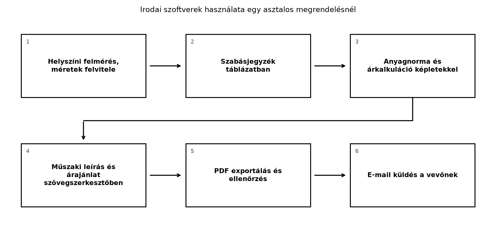
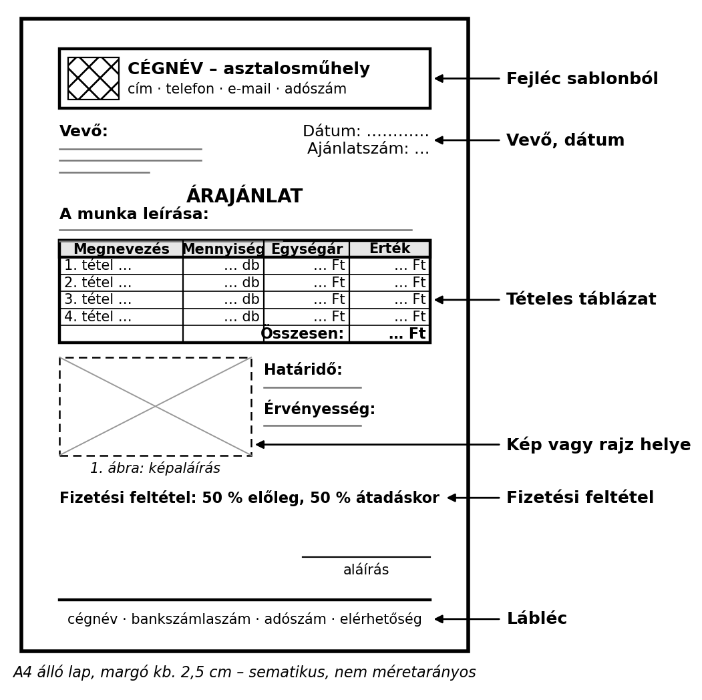

Motiváció: egy megrendelés dokumentációja nem lehet fegyelmezetlen. Ha papíron számolsz, elég egy rosszul összeadott oszlop vagy egy elütött telefonszám, és máris rossz anyagot rendelsz vagy rossz árat adsz. Az irodai szoftverek – szövegszerkesztő, táblázatkezelő, e-mail – arra valók, hogy a műszaki leírást, a szabásjegyzéket, az anyagnormát és az ajánlatot áttekinthetően, újraszámolhatóan és szakszerűen küldd el a vevőnek, a beszállítónak vagy a kollégának.
Szemléletes kép: egy beépített szekrény megrendelésének digitális útja. A rajz vagy felmérés után a méreteket beviszed a táblázatkezelőbe. A táblázat kiszámolja a lapméreteket, az élzáró folyómétert és az anyagköltséget. A szövegszerkesztőben kész műszaki leírást és árajánlatot formázol, majd PDF-ként elküldöd e-mailben. Minden lépés nyomon követhető és javítható.

Definíció. Irodai szoftvernek (más néven irodai programcsomagnak) nevezzük azokat a számítógépes programokat, amelyekkel dokumentumokat írunk, táblázatokat számolunk, adatokat rendszerezünk, és levelezünk. A faipari gyakorlatban a három legfontosabb: a szövegszerkesztő, a táblázatkezelő és az e-mail kliens (levelezőprogram).
Definíció. A sablon olyan előre elkészített dokumentum, amelyben a betűtípusok, címsorok, fejléc és lábléc egyszer már be vannak állítva. Ha sablont használsz, nem kell minden árajánlatnál újra megtervezni a lapot; csak a változó adatokat írod át.
A szövegszerkesztő (például egy irodai programcsomag szöveges modulja) arra való, hogy a műszaki leírást, az árajánlatot, a munkanaplót vagy a szerelési útmutatót tisztán, olvashatóan készítsd el.
A legegyszerűbb műhelyhelyzetben is érdemes sablont használni. Egy asztalos árajánlata mindig ugyanazokból az elemekből áll: fejléc (cégnév, elérhetőség), a vevő adatai, a munka leírása, a tételes anyag- és munkadíj, a fizetési feltétel, az érvényesség és az aláírás. Ha ezt egyszer elkészíted sablonként, a következő ajánlatnál csak a megrendelő nevét és a tételeket módosítod. Ez gyorsabb és kevesebb hibalehetőséggel jár.
Definíció. Az alábbi lépések egy recept (eljárás) arra, hogyan készíts szakszerű műszaki leírást vagy árajánlatot szövegszerkesztőben.

A sablonban csak a vevő adatai, a munka leírása és a táblázat tételei változnak; a fejléc, a lábléc és a fizetési feltétel sora ajánlatról ajánlatra ugyanaz marad.
A táblázatkezelő (például egy irodai programcsomag táblázatos modulja) a leghasznosabb digitális eszköz az asztalos anyagelszámolásában. A táblázatkezelő celláiba számokat és képleteket írunk; ha megváltoztatunk egy méretet vagy mennyiséget, a program újraszámolja az összes kapcsolódó értéket.
A szabásjegyzék a munkadarabok listája. Az anyagnorma ebből számítja ki, mennyi lapanyag, tömörfa, élzáró, ragasztó, vasalat és felületkezelő anyag kell. A digitális táblázatban a kettő egy fájlban is működhet úgy, hogy az egyik munkalap a szabásjegyzék, a másik az anyagszükséglet-összesítés.
Az asztalos táblázatkezelőjében a méreteket mm-ben írjuk be. A térfogatot vagy felületet azonban m³-ben, m²-ben vagy fm-ben akarjuk látni. A táblázatkezelőben a cella képlete a cellaazonosítókkal dolgozik.
Legyen a táblázat oszlopa így:
| Oszlop | Tartalom | Példa |
|---|---|---|
| A | Tétel neve | Oldallap |
| B | Darabszám | 2 |
| C | Hossz (mm) | 2400 |
| D | Szélesség (mm) | 600 |
| E | Vastagság (mm) | 18 |
| F | Térfogat (m³) | = B*C*D*E/1000000000 |
Szabály. A képletet mindig
mértékegység-ellenőrzéssel írd. Ha a méret mm-ben van, akkor mm · mm ·
mm = mm³. Ahhoz, hogy m³-t kapj, osztanod kell
-val,
mert
.
A táblázatban a képlet így néz ki:
=B2*C2*D2*E2/1000000000.
Számítás. Egy szekrény oldallapja 2400 mm hosszú, 600 mm széles, 18 mm vastag. Ebből 2 darab kell. Mennyi a két oldallap térfogata?
Számítás. A szabásjegyzékben az élzáró anyagot folyóméterben (fm) számoljuk. Egy 600 × 400 mm-es ajtólap mind a négy élét 2 mm vastag élzáróval vonjuk be. Mennyi az élszalag igény 4 ajtóhoz?
=B2*2*(C2+D2)/1000. Ellenőrzés:
fm.Megjegyzés. A táblázatkezelőben a mértékegységet az
oszlopfejlécbe írd, és a képletbe ne tegyél szöveges mértékegységet,
mert a program csak számmal tud számolni. A 1000000000
osztó a fenti térfogatoszlopban a mm³ → m³ váltást végzi.
A szabásjegyzék alján összesítő sort alakítunk ki. A
=SZUM(F2:F20) képlet összeadja a 2 és 20 sor közötti
térfogatértékeket. (A pontos függvénynév a irodai programtól függ, de a
magyar nyelvű táblázatkezelőben jellemzően SZUM vagy
SUM az összegző függvény; ellenőrizendő a konkrét
programban.)
Kerekítés. Az anyagrendelésnél a felfelé kerekítés a
biztonságos. Ha a táblázat szerint 2,3 lap 2800 × 2070 mm-es anyag kell,
rendelj 3 lapot. A szabásjegyzékben a lapanyagot nem a kiszámított
tizedesre, hanem a ténylegesen megrendelhető táblaszámra írd át. A
kerekítést a táblázatkezelő felfelé kerekítő függvényével is
megjelenítheted: =KEREK.FEL(A1;0) (magyar nyelvű Excel; más
programban a függvény neve eltérhet – ellenőrizendő).
Táblázatkezelő képletek a szabásjegyzékben:
| Oszlop | Tartalom | Képlet |
|---|---|---|
| A | Tétel neve | szöveg |
| B | Darab | kézzel írt szám |
| C | Hossz (mm) | kézzel írt szám |
| D | Szélesség (mm) | kézzel írt szám |
| E | Vastagság (mm) | kézzel írt szám |
| F | Térfogat (m³) | =B2*C2*D2*E2/1000000000 |
| G | Felület (m²) | =B2*C2*D2/1000000 |
| H | Élzáró (fm) | =B2*2*(C2+D2)/1000 (ha minden él élzárt) |
Az ábra az első táblázat kiosztását folytatja (A tétel, B darab, C–E
méretek mm-ben, F térfogat), és kiegészíti a G felület- és a H
élzáróoszloppal. Minden képlet a sor darabszámával (B) is szoroz: a 4
ajtó élzárója így =B5*2*(C5+D5)/1000 = 8 fm, a két oldallap
térfogata 0,05184 m³. Az összesítő sor SZUM, a táblaszám
felfelé kerekít. A HTML-változatban a cellák átírhatók, a képletek
élőben újraszámolnak, és egy kapcsolóval kipróbálhatod, mekkora hibát
okoz a rossz mértékegység-osztó.
Minőségellenőrzés a digitális szabásjegyzékben.
Miután a táblázat kész, ellenőrizd a nagyságrendet kézi becsléssel. Ha
egy 1800 × 2400 × 600 mm-es gardrób korpuszához 8–12 m² forgácslap jön
ki, az reális; ha 3 m² vagy 30 m², valószínűleg hiányzik egy sor vagy
rossz az osztó. Tömörfa polcnál pl. 6 db 1000 × 300 × 18 mm ≈ 0,03 m³ –
egy ilyen bútorhoz ritkán kell 0,1 m³-nél több. Ha 25 m² jön ki egy
kisebb polcra, akkor valószínűleg elfelejtetted osztani a felületet
1000000-nal vagy a darabszámot nem egyszer, hanem többször
szoroztad be.
Definíció. Az adatbázis olyan digitális nyilvántartás, amelyben az adatokat rendezetten, kereshetően tároljuk. A kis műhelyben a táblázatkezelő gyakran elég, mert az is tud szűrni, rendezni és összesíteni. Nagyobb forgalomnál, több ezer tételnél célprogramot használunk.
Gyakori faipari adatbázisfeladatok:
Gyakorlatias tanács. Egy táblázatkezelő munkalapján a fejlécsort rögzíteni kell, hogy görgetéskor is látni lehessen az oszlopneveket (a programonként változó „nézet / fejlécek rögzítése” menüvel; ellenőrizendő). A szűrés pedig például egy adott fafajú, adott beszállítójú tétel kiválasztására való.
Az asztalos munkájában az internet alapvető eszköz lett. Kereshetsz anyagárat, vasalati adatlapot, gyártói műszaki adatlapot, biztonsági adatlapot és szabványkivonatot.
Amikor az interneten böngészel:
Az e-mail ma az egyik leggyakoribb hivatalos kapcsolattartó eszköz. A szakszerű levél rövid, udvarias, tárgyszerű.
Példa üzenet. > „Tisztelt Kovács Úr! > Csatolva küldöm a tegnap felmért gardrób ajánlatát és szabásjegyzék alapján készült műszaki leírását PDF-ben. Az ajánlat 30 napig érvényes. Kérem, jelezze, ha a szín vagy a fogantyú típusa változott. > Üdvözlettel: > Tóth Péter > Tóth Asztalos Kft.”
A vevők adatai (név, cím, telefonszám, e-mail, adószám, banki adat) személyes és gazdasági adatok. A magyarországi gyakorlatban a természetes személyek adataira az adatvédelmi jog (a GDPR-rendelet, az információs önrendelkezési jogról szóló törvény; pontos megnevezésük ellenőrizendő) vonatkozik.
A gyakorlati szabály egyszerű: csak azokat az adatokat gyűjtsd és tárold, amelyek az üzlethez szükségesek; ne küldd el másnak; ne tedd közzé; és tartsd elzárva vagy jelszóval védve. Ha egy e-mail címet a több címzettnek küldött levél „Címzett” mezőjébe írsz, mindenki látja a többiek címét. Ilyenkor használd a „titkos másolat” (tk.) mezőt. Az e-mail fiók jelszavát ne add ki, és gyanús csatolmányt ne nyiss meg.
Cél: szabásjegyzék készítése táblázatkezelővel, anyagnormával. Anyagok: a megadott termék rajza, a méretek listája, lapanyag- és élzáró-adatok (tájékoztató). Szoftverek: táblázatkezelő, szövegszerkesztő, PDF olvasó.
SZUM képletet az anyagmennyiség oszlopokra. – ellenőrzés: a
végösszeg reális nagyságú.Hiba: a végösszeg irreálisan nagy. Ok: a képletben a felületváltásnál a 1000000 helyett csak 1000-rel osztottak, vagy a darabszám oszlop helytelen. Helyes gyakorlat: a mértékegység-átváltást mindig számítsd át egy ismert tétellel (például 1 m² az 1000 mm × 1000 mm).
Hiba: a vevőnek küldött levélhez rossz rajz vagy rossz árajánlat van csatolva. Ok: a fájlnevek nem érthetőek, például „vegyes1.pdf_vegleges(2).pdf”. Helyes gyakorlat: használj egyértelmű fájlnevet: „2024_11_05_Kovacs_gardrob_ajanlat.pdf”.
Hiba: a táblázatcellában a képlet nem jelenik
meg, csak a felírt képlet szövege. Ok: a cella szöveges
formátumra van állítva, vagy egyenlőségjel hiányzik. Helyes
gyakorlat: mindig = jellel kezdd a képletet, és
ellenőrizd a cella formátumát.
Hiba: a levélben több vevő e-mail címe is látszik a címzettek között. Ok: a levelet mindenki a „Címzett” mezőbe tették. Helyes gyakorlat: tömeges levélnél a saját címedet tedd a „Címzett” mezőbe, a többieket a „Titkos másolat” mezőbe.
Egy asztalostanuló konyhabútorhoz készített szabásjegyzéket. A táblázatban a felületet kézzel számolta, és az egyik lap szélességét 300 mm helyett 600 mm-ként másolta be. A táblázat felfelé kerekítve eggyel több forgácslapot rendelt, mint kellett. A hibát a mestere az anyag átvételekor vette észre, amikor a rendelt lapok nem fértek el a szokásos tárolóhelyen. A tanuló ezután a szabásjegyzék sorait sorról sorra, a rajzról történő kiosztással ellenőrizte, és a fejlécet rögzítette, hogy ne tévessze el a szélesség oszlopot. A hiba tanulsága: a táblázat csak akkor pontos, ha az adatforrás (rajz, felmérés) is pontos.
Önellenőrzés – válaszok
1. feladat (A). Sorold fel a három legfontosabb irodai szoftvert a faipari munkában, és írd le, melyikre mire használod.
2. feladat (A). Írd le számokkal: 1 m³ hány mm³?
3. feladat (B). Egy szabásjegyzékben 6 db polclap van, mindegyik 1000 mm hosszú, 300 mm széles és 18 mm vastag. Számítsd ki a 6 polc teljes térfogatát m³-ben.
4. feladat (B). Egy levélben ügyfelet kérdezel az ajánlatról. Írj rövid, szakszerű e-mailt a tárgy mezővel, a megszólítással, egy bekezdéssel és elköszönéssel.
5. feladat (C). Adott egy táblázat, ahol az F
oszlopba a =B*C*D képletet írták, és a fejlécben „m³”
szerepel. Mi a hiba? Hogyan javítod?
6. feladat (D). Készíts táblázatkezelőben egy 3 soros díszléc-szabásjegyzéket. A sorok: 10 db 1500 mm, 5 db 2000 mm, 2 db 800 mm. Az egységár 1200 Ft/fm (mintaár). Számítsd ki a teljes folyómétert és a teljes anyagköltséget. Írd le a képletek értelmét szövegesen.
1. feladat. Szövegszerkesztő: műszaki leírás, árajánlat, levelek. Táblázatkezelő: szabásjegyzék, anyagnorma, kalkuláció, raktárkészlet. E-mail kliens: kapcsolattartás, csatolmányok küldése.
2. feladat. .
3. feladat. Egy polc térfogata mm³-ben: . Átváltva: . Hat polc: .
4. feladat. „Tárgy: Kérdés a gardrób ajánlathoz. Tisztelt Kovács Úr! Köszönöm a megkeresését. Az ajánlatot csatoltan küldtem, kérem, jelezze, hogy a fehér és a bézs szín közül melyik a megfelelő. Üdvözlettel: Tóth Péter”.
5. feladat. A képlet mm³-t számol, nem m³-t. Mivel
,
a képletet /1000000000-zal kell osztani:
=B*C*D/1000000000.
6. feladat. Táblázat: A = db, B = mm hossz. C
oszlop: =A2*B2/1000 (fm-ba vált). A sorokra: 15 fm, 10 fm,
1,6 fm. Összesen: =SZUM(C2:C4) = 26,6 fm. Egységár D
oszlopban 1200 Ft/fm. Érték E oszlopban: =C5*1200 = 31 920
Ft nettó anyagköltség (mintaár; az ÁFA külön sorban jelenne meg, kulcsa
ellenőrizendő). Ellenőrzés: a folyóméter nagysága reális.
Az irodai szoftverek az asztalos mindennapi eszközei. A szövegszerkesztővel készítjük a műszaki leírást és az árajánlatot; a sablonok és a stílusok használata egységessé és gyorssá teszi a dokumentumokat. A táblázatkezelő a szabásjegyzék és az anyagnorma alapja; a cellákba képleteket írunk, és a program az adatváltozásra újraszámol. A legfontosabb gyakorlati szabály a mértékegység-átváltás: ha a méret mm-ben van, a térfogathoz 1 000 000 000-val osztunk, a felülethez 1 000 000-rel. A képletekben cellaazonosítókat használunk, a mértékegységet a fejlécbe írjuk. Az adatbázis feladatok (konszignáció, raktár, ügyfélnyilvántartás) kis üzemben táblázatkezelőben is vezethetők. Az e-mail kapcsolattartás szakszerű, ha a tárgy pontos, a levél rövid, a csatolmány PDF. A vevői adatokat védeni kell, a csoportos leveleknél a titkos másolat használata alap. Ezt a digitális szabásjegyzék- és anyagnorma-gyakorlatot használjuk a továbbiakban a CAD, látványtervezés, optimalizálás és CNC-adatátvitel, és az Árajánlat készítése: termelési ár, ÁFA, kiszámlázott ár alfejezetekben.
Forrástípusok: irodai programcsomag súgói és gyakorlati felhasználói útmutatók, informatikai alapismereti tankönyvek, adatvédelmi jogszabályi háttér (GDPR és hazai adatvédelmi törvény, a pontos megnevezést és hivatkozást ellenőrizni kell), valamint a faipari szabásjegyzék és anyagnorma számítási hagyománya. A táblázatkezelő függvénynevei és kerekítési módjai programonként eltérhetnek; a pontos neveket a használt program súgójában ellenőrizni kell. A példákban szereplő mintaárak, szabványlapméretek és levélformátumok tájékoztatók, a konkrét irodai program verziójától és a vállalkozás arculatától függnek.